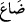

İkinci bir ihtimal olarak “
/dallû”, yitip gittiler, anlamındadır. Yâni “
”, “
” ve
“
” mânâsında olup, “Kendilerinden bekleyip, umup durduğumuz şeyleri bulamadık.”
Böylece, putlar dâimâ müşriklerle beraber olmalarına rağmen, onlardan bekledikleri
çıkarı elde edemedikleri için, putların varlığı, “yitip gitme ve helâk olma” mertebesine
indirilmiştir.
Bize âşikâr oldu ki “meğer biz önceleri” yâni dünyada onlara tapınırken “hiçbir şeye
tapmıyormuşuz, diyecekler.” Zira ortaya çıktı ki bu putların, değer verilecek,
önemsenecek hiçbir varlıkları yok! Tıpkı, “Ben de onu bir şey sandım, oysa değilmiş!”
cümlesi gibi. Yani, bize âşikâr oldu ki bir şeye tapmamışız, belki ibâdet ettiğimiz şeyler,
muteber şeyler değilmiş. Halbuki biz onları bir şey zannediyorduk.
“İşte Allah, kâfirleri böyle” yani, dünyada iken kendilerine âhirette faydalı olacak
inanç ve amellere yol bulamadıkları gibi “şaşırtır.” Bu açıklama, “
”nün ikinci
tefsirine göredir. Ya da tanrı diye bildikleri şeyler yitip gittikleri gibi, Allah bunları
tanrılarından saptıracaktır. Öyle ki kendilerini aradıklarında rastlaşamayacaklardır.
Yâni birbirlerini bulamayacaklardır ki bu açıklama da “
”nün ilk tefsirine göredir.
Sadreddin Konevî (k.s.)’un Tefsîru’l-Fâtiha’sında şu izah yer alır: “Cenab-ı Hakk’ın
kullarını saptırması” demek, yasakladığı şeyleri yapmaktan bizzat korumaması ve
emrettiklerini yapıp yasakladıklarından el çekme konularında yardım ve imdat etmemesi
demektir. Tîbî nüshasında da şöyle der: “Kezâlik: böyle”, yâni saptırdığı gibi demektir.
Müftî Sa’dî diyor ki: Ben şu görüşteyim: “Meğerse biz önceden hiçbir şeye
tapmamışız...” âyeti, “Vallahi Rabbimiz! Biz ortak koşmuyorduk!” (el-En’âm 6/23)
âyetine benzer. Yani, içinde bulundukları dehşet ve sıkıntıdan dolayı yalan söylemeye
mecbur kalırlar. “İşte Allah, kâfirleri böyle şaşırtır” ifâdesinin mânâsı da “işte Allah;
bunları böyle şaşırtıp kendilerine hiçbir faydası olmayacağını bildikleri halde, yalan
söylemeğe âdetâ mecbur bırakır” şeklindedir.
75. Bu, sizin yeryüzünde haksız olarak şımarmanızdan ve aşırı derecede sevinip
böbürlenmenizden ötürüdür.
Ey kâfirler! “Bu” saptırış... Burada gâibden muhatab sîygasına geçilmesi kınamada
mübâlağa içindir. Celâleyn’e göre: “Bu”, başınıza gelen azap demektir ki
“boyunlarında demir halkalar…” (71. âyette) geçen azaptır. İbnü’ş-Şeyh der ki: Bu
dediği biraz uzakta (yukarıda) kalmıştır.
“Sizin yeryüzünde” dünyada “haksız yere” yâni gerçek olmayan şirk ve tuğyan gibi
özelliklerle “şımarmanızdan...”
Kamus’ta der ki: “Ferah” sevinç ve şımarma demektir.